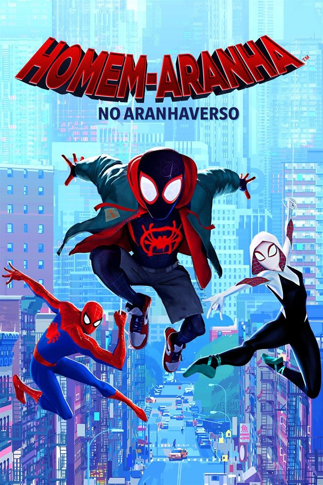
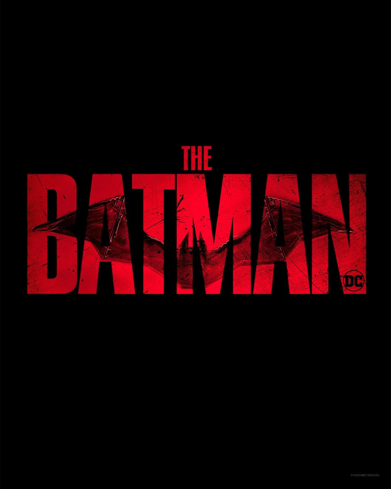
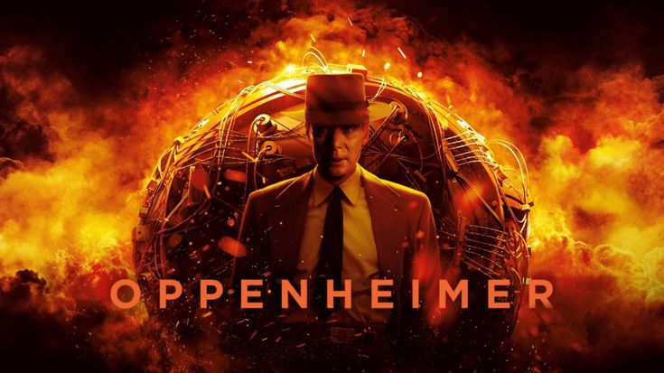

“Duna: Parte 2” — visual épico e trilha avassaladora
Denis Villeneuve retorna com uma continuação grandiosa que aprofunda as intrigas políticas de Arrakis e apresenta cenas de batalha cinematográficas impressionantes. Confira a crítica, o trailer e curiosidades sobre a produção.
Ver trailer7 MIN LEITURA
“Coringa: Folie à Deux” — análise
Lady Gaga e Joaquin Phoenix entregam uma combinação explosiva entre drama e musical que já divide opiniões entre críticos.
Ver trailerEntrevista com compositores
Como a trilha sonora vem moldando as emoções na nova safra de blockbusters.

Homem-Aranha: Através do Aranhaverso — multiverso em expansão
Uma animação que transcende o gênero e conquista público e crítica. 4 MIN LEITURA
Ver trailer

The Batman — novo visual sombrio
Robert Pattinson encara o papel com um tom mais noir e investigativo. 5 MIN LEITURA
Ver trailer

Oppenheimer — o épico histórico de Nolan
Um drama biográfico que explorou a ciência e a moralidade de uma era. 9 MIN LEITURA
Ver trailer